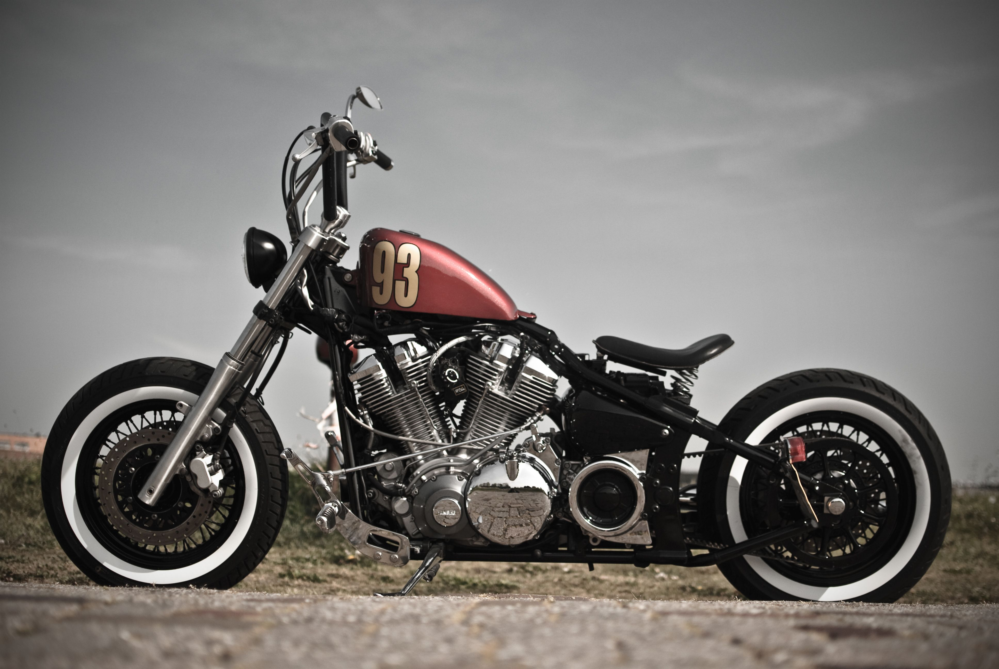

TIPOS DE MOTOS Y SUS CARACTERISTICAS
¿SABES DIFERENCIAR LOS TIPOS DE MOTO QUE EXISTEN
¿CUAL ENCAJA MEJOR EN TU ESTILO DE VIDA?
Las motos son una gran forma de transportarse, no solo son rapidas y facil de manejar, para moverse
en
cualquier momento y lugar, si no que la mayoria son muy economicas.
Sabemos que, cuando estás
por
comprar una motocicleta, lo más complicado es elegir entre varios tipos de motos, pues existen
varias
clasificaciones que incluso han ido aumentando gracias a la creación de híbridos y a su demanda en
el
mercado; y entre tantos modelos, marcas y precios es difícil decidir cuál es la correcta.
MOTOS DE CIUDAD
Scooter o Motoneta

Las hay de asiento para una o dos personas dependiendo el tamaño, cuentan con piso para los pies
y
tienen
suficiente espacio bajo el asiento como para guardar tu casco o mochila. Además, aunque las más
básicas
y
menos capaces tienen 49 cc, el rango de cilindradas es muy amplio, rondan principalmente los 125
cc.
Suelen ser muy comunes en las ciudades porque representan la mejor opción para este tipo de
entorno,
sobre todo para las personas jóvenes que habitan en ellos. Como los ciclomotores, cuentan con
muy
poca
potencia, pero resultan ser mucho más asequibles que otros modelos que existen en el mercado.
También
son
ideales para cortas distancias y entornos muy poco exigentes.
Maxiscooter
Pueden alcanzar velocidades mayores pues poseen mayor potencia y cilindrada. Por ejemplo 180
km/h, y
por
lo
tanto se puede viajar con ellas con comodidad y seguridad.
Como su nombre lo indica
llegan a
ser
un
poco
más grandes que un scooter para ofrecer mayor potencia, ampliando así las posibilidades de
recorrer
distancias más largas.
No es raro que este tipo de moto tenga la horquilla como la de
una
motocicleta y
que no cuente con piso para los pies; frenos más capaces con anclaje radial y algunas ayudas
a
la
conducción
como aviso de aproximación de ángulo muerto son características que las diferencian de las
Scooter.
MOTOS PARA CORRER
Moto Sport
Las sport o super deportivas son las más potentes en la lista, las más deportivas incluso
están
pensadas
más
para circuito que para autopista.
Además de tener potencias altísimas, tienen un
reglaje
más
parecido a
la competición que requiere de terrenos lo más lisos posible para trabajar adecuadamente.
Las
potencias
que alcanzan estas motos suelen estar en lo más alto de la tabla, con cilindradas que van
desde
los
600
cc a
más 1.200 cc.
Superbike
A partir de aproximadamente 1.000 cc una moto sport se suele llamar superbike. Son el mismo
concepto
de
moto
pero con más prestaciones. Además de que normalmente llevan frenos y otros componentes de
mayor
rendimiento,
en muchos casos pensados para circuito.
Este tipo de moto son las elegidas para usarse
como
motos
de
competición en el Campeonato Mundial de Superbikes o Worldsbk.
El tipo de motocicletas
que
participan en
este campeonato son de cuatro tiempos y distintas cilindradas, dependiendo del número de
cilindros.
Así,
las
tetracilíndricas no superan los 1000 cc (Suzuki GSX-R 1000, Kawasaki ZX10-R, etc.), las
tricilíndricas
los
900 cc y las bicilíndricas los 1200 cc (Ducati 1199).
Supermoto
Son motos de campo tipo cross o enduro,que han sido modificadas para el asfalto. Así que son
muy
potentes
pero muy ligeras y maniobrabSe usan para la categoría de competición Supermotard. Para ello
se
les
cambian
los neumáticos por unos deportivos para asfalto, se les ponen unas llantas apropiadas y se
les
endurece
la
suspensión. Los frenos se sustituyen por unos de mayor tamaño, sobre todo en la rueda
delantera,
porque
las
continuas frenadas deben ser más fuertes y exigentes.les.
MOTOS PARA VIAJAR
Cruiser
Las motos tipo cruiser o crucero están pensadas para viajar cómodamente por autopista. Por
eso
están
fabricadas para tener una postura de conducción lo más cómoda posible y cuenta con baúles
con
mucho
espacio
para el equipaje.
Así mismo, cuentan con espacio para dos personas y muchas veces el
pasajero
tiene
un
asiento un poco más alto, para poder disfrutar de las vistas que el viaje te ofrece en vez
de
estar
cientos
de kilómetros mirando el casco del conductor.
Este tipo de moto se caracterizan por ser
grandes
y
potentes, por lo que tienen poca maniobrabilidad, así que no son buena opción para ciudad o
carreteras
reviradas.
Gran Turismo
Diseñadas para largos recorridos, estas motocicletas suelen ser grandes en comparación con
los
demás
tipos
que existen. Gracias a eso, poseen varios compartimientos para la carga, convirtiendose en
una
opción
perfecta para los viajes por carretera solo o en pareja. Son mucho más pesadas y menos
ágiles
que
otros
modelos, pero cuentan con funciones adicionales que garantizan el confort como calefacción,
radio y
mayor
espacio para el conductor y su pasajero.
Existen algunos modelos que se conocen como
Sport
Turismo
que
ofrecen lo mejor de estas motocicletas, combinándolo con algunas características de las
motos
deportivas.
MOTOS MULTIPROPOSITO
Naked
Este tipo de motos se caracterizan por ser muy llamativas, ya que dejan al descubierto sus
partes
mecánicas.
Suelen ser usadas en deportes, pero también en ciudades, y pueden brindar mayor rendimiento
en
distancias
mucho más largas, a diferencia de los scooters. A pesar de su particular diseño, pueden
llegar a
ser
muy
cómodas de conducir.
Estas motos son muy versátiles y las hay con cilindradas muy
variadas
que
suelen ir
desde los 350 cc hasta más de 1.000 cc.
Trail
Trail significa sendero, así que como su nombre indica también pueden usarse fuera de la
carretera,
lo
que
las hace muy versátiles. Principalmente porque tienen más altura hasta el suelo que las
motos
mencionadas
hasta ahora y porque tienen más recorrido de suspensión.
Ideal para las personas más
aventureras
que
les
gusta salirse de la carretera y experimentar otros caminos. Representa una opción versátil
que
puede
servir
para la ciudad o para cualquier otro plan. Cuenta con buena potencia y su diseño resulta ser
uno
de
los
más
cómodos del mercado. Al igual que los scooters, existen modelos maxitrail que multiplican
las
ventajas
de
este tipo de vehículos.
En cuanto a su cilindrada, aproximadamente hasta los 800 cc se
las
llama
de
tipo
trail. Si tiene motores mayores como de 1.000 cc, 1.200 cc o más, se suelen llamar
maxi-trail.
Sport Turismo

Las motos sport turismo o turismo deportivo son el tipo de moto que te ofrecen un
comportamiento
deportivo y
al mismo tiempo ser cómodas para conducir largas distancias, pues tienen una forma
aerodinámica
que
salvaguarda al conductor del viento.
Actualmente, estas motos no se venden mucho debido
al
crecimiento
en la demanda de otros tipos de motos como las naked o las maxi-trail.
MOTOS PARA CAMPO
Cross
Las motos de cross son motos para enfrentarte a cualquier terreno fuera del asfalto:Senderos
complicados
con
rocas
Pistas embarradas o áridas
Grandes desniveles
Son motos ligeras y manejables con suficiente altura hasta el suelo y
recorrido
de
suspensión para afrontar terrenos complicados; por lo que suelen usarse para competir.
La
principal
desventaja, es que no están homologadas, por lo tanto, no tienen elementos básicos como
faros,
intermitentes, etc. y solo se pueden conducir legalmente en circuitos o fincas particulares
cerradas.
Eduro
on una versión homologada de las motos de cross. Por eso tienen componentes como los
retrovisores,
los
faros,
intermitentes, espacio para matrícula, pata de cabra, etc.
Suelen tener una
configuración
menos
radical
en la suspensión, el motor y el cambio. Además de una llanta más pequeña en la rueda
trasera,
porque
no
necesitan tanta precisión de trazada como las de cross.
MOTOS CLASICAS
Bobber
Las Bobber son motos muy peculiares que tienen un asiento para una sola persona (a pesar de
que
tienen
tamaño
y potencia de sobra para dos personas); también se caracterizan por no tener carenado en
casi
ninguna
parte,
dejando a la vista toda la mecánica de la moto.
Son muy bajas y tienen el manillar
adelantado,
lo
que
les da una postura de conducción muy curiosa. Son
pesadas y poco prácticas, pero compensan esto con un diseño retro muy interesante, que atrae
las
miradas
de
muchos.
Street Tracker
Son motos fácilmente reconocibles porque son muy delgadas. Aunque tienen su origen en la
competición
Dirt
Track, las street tracker son versiones pensadas para circular por entornos urbanos. Lo que
incluye,
por
supuesto, la inclusión del freno delantero, que está prohibido en este tipo de
competiciones.
Son
ligeras, manejables y su manillar está en una posición cómoda para circular por la calle. Al
mismo
tiempo,
no suelen ser muy potentes y tienen un chasis de tipo cuna, por lo que su aspecto es
sencillo al
mismo
tiempo que retro.
Flat Tracker
Coinciden en la mayoría de los aspectos con la street tracker, pero la altura del manillar y los neumáticos varía, porque están pensadas para tierra o nieve. Su nombre flat, viene del anterior nombre que tenía la competición Dirt Track, que era Flat Track. Una categoría de origen estadounidense que consistía en un óvalo de tierra sin desniveles o prácticamente sin ellos.
Café Racer
Son motos con un diseño propio de los años 50, periodo en el que fueron creadas. Aunque para ser exactos, la palabra correcta sería modificadas en lugar de creadas. Ya que este estilo salió de las modificaciones de motos de la época como: manillares deportivos más cortos, depósitos de cierta capacidad, asientos individuales y reposapiés colocados más atrás, para darle un toque más deportivo.
Brat Style
Las reconocerás porque tienen un asiento largo, corrido y sin ningún colín. Se parecen un poco a las bobber en todo lo demás menos en ese aspecto y en el que el manillar es algo más corto. Pueden llegar a ser incómodas, porque no tienen nada que impida que el conductor se deslice hacia atrás en las aceleraciones o las cuestas. Aunque no están mal para ciudad y trayectos cortos.
Scrambler
Dentro de las retro, son de los tipos de motos pensadas para conducir por carretera y/o fuera de ella. Para reconocerlas puedes fijarte en las ruedas, que serán mixtas o con tacos (si se quiere mantener su esencia), unos tubos de escape apuntando hacia arriba y una postura de conducción más relajada que en otras clásicas.
MOTOS CUSTOM
Shopper
El término custom se usa a veces para referirse a las motos cruiser, sin que lleguen a tener
ninguna
personalización. Sin embargo, en realidad hace referencia en exclusiva a las motos
customizadas.
Es
decir,
motocicletas adaptadas al conductor y a sus preferencias de forma artesanal.
Las motos
chopper
son
un
tipo de moto custom, que tienen cambios para hacerlas más ligeras y con un estilo
característico.
Su
chasis se recorta (de donde viene su nombre) y se le pone un tanque más contenido. Tienen
luces,
guardabarros, asientos y parabrisas más pequeños. Pero lo que es más importante, cuentan con
los
manillares
que hemos mencionado más alargados y altos de lo normal, además de tener una horquilla muy
grande
con la
rueda delantera muy avanzada.